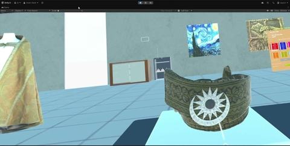

Museum / Conservation Lab VR
A VR conservation-lab experience for museum conservators to practise examining artifacts and documenting their condition.
Artifact inspection
Players approach artifacts displayed on podiums, pick them up, rotate them for inspection, and use an on-screen interface to record observed damage. The experience turns those observations into category-level guidance and an overall condition assessment, helping conservators understand how a structured assessment can inform preservation decisions.

My contribution
I designed and implemented the assessment logic, interaction flow and core functionality. The scoring method and its internal weighting are intentionally not described here.
Movement and platform
I developed the experience for Unity 6 and Meta Quest 3. Locomotion uses continuous joystick movement and snap turning; activity transitions can reposition the player in front of the relevant interface.